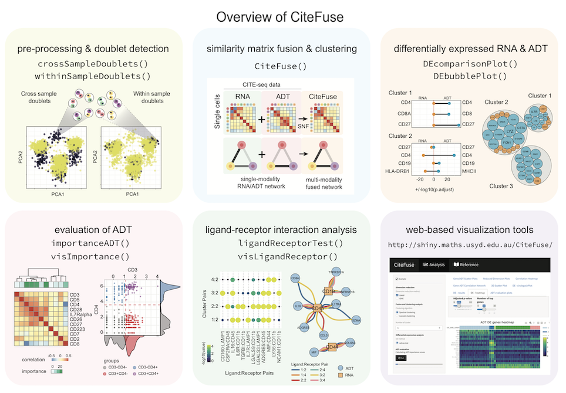
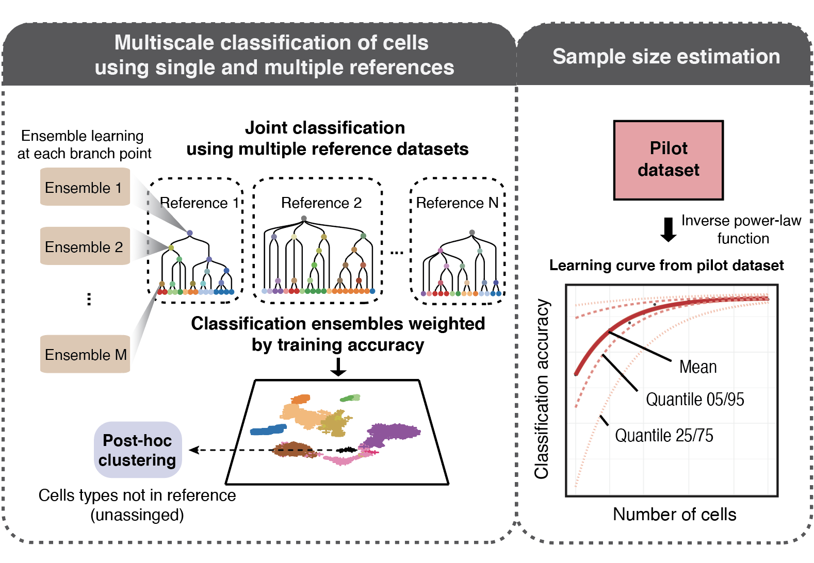

Single-cell data integration
scMerge
Single-cell RNA-sequencing (scRNA-seq) profiling has exploded in recent years and enabled new biological knowledge to be discovered at the single-cell level. Successful and flexible integration of scRNA-Seq datasets from multiple sources promises to be an effective avenue to obtain further biological insights. This study presents a comprehensive approach to integration for scRNA-seq data analysis. It addresses the challenges involved in successful integration of scRNA-seq datasets by using the knowledge of genes that appear not to change across all samples and a robust algorithm to infer pseudoreplicates between datasets. This information is then consolidated into a single-factor model that enables tailored incorporation of prior knowledge. The effectiveness of scMerge is demonstrated by extensive comparison with other approaches.
- Github: https://github.com/SydneyBioX/scMerge
- Reference:
- scMerge: Lin, Y., Ghazanfar, S., Wang, K.Y., Gagnon-Bartsch, J.A., Lo, K.K., Su, X., Han, Z.G., Ormerod, J.T., Speed, T.P., Yang, P. and Yang, J.Y.H. (2019) scMerge leverages factor analysis, stable expression, and pseudoreplication to merge multiple single-cell RNA-seq datasets. Proceedings of the National Academy of Sciences.
- scMerge2: Lin, Y., Cao, Y., Willie, E., Patrick, E., Yang, J.Y.H. (2022) Atlas-scale single-cell multi-sample multi-condition data integration using scMerge2.
scJoint
Single-cell multiomics data continues to grow at an unprecedented pace. Although several methods have demonstrated promising results in integrating several data modalities from the same tissue, the complexity and scale of data compositions present in cell atlases still pose a challenge. Here, we present scJoint, a transfer learning method to integrate atlas-scale, heterogeneous collections of scRNA-seq and scATAC-seq data. scJoint leverages information from annotated scRNA-seq data in a semisupervised framework and uses a neural network to simultaneously train labeled and unlabeled data, allowing label transfer and joint visualization in an integrative framework. Using atlas data as well as multimodal datasets generated with ASAP-seq and CITE-seq, we demonstrate that scJoint is computationally efficient and consistently achieves substantially higher cell-type label accuracy than existing methods while providing meaningful joint visualizations. Thus, scJoint overcomes the heterogeneity of different data modalities to enable a more comprehensive understanding of cellular phenotypes.
- Github: https://github.com/SydneyBioX/scJoint
- Reference: Lin, Y.†, Wu, T.Y.†, Wan, S., Yang, J.Y.H., Wong, W.H., and Wang, Y.X.R.(2022) scJoint: transfer learning for data integration of single-cell RNA-seq and ATAC-seq. Nature Biotechnology.
CiteFuse
 Multi-modal profiling of single cells represents one of the latest technological advancements in molecular biology. Among various single-cell multi-modal strategies, cellular indexing of transcriptomes and epitopes by sequencing (CITE-seq) allows simultaneous quantification of two distinct species: RNA and cell-surface proteins. Here, we introduce CiteFuse, a streamlined package consisting of a suite of tools for doublet detection, modality integration, clustering, differential RNA and protein expression analysis, antibody-derived tag evaluation, ligand–receptor interaction analysis and interactive web-based visualization of CITE-seq data. We demonstrate the capacity of CiteFuse to integrate the two data modalities and its relative advantage against data generated from single-modality profiling using both simulations and real-world CITE-seq data. Furthermore, we illustrate a novel doublet detection method based on a combined index of cell hashing and transcriptome data. Finally, we demonstrate CiteFuse for predicting ligand–receptor interactions by using multi-modal CITE-seq data. Collectively, we demonstrate the utility and effectiveness of CiteFuse for the integrative analysis of transcriptome and epitope profiles from CITE-seq data.
- Github: https://github.com/SydneyBioX/CiteFuse
- Reference: Kim, H.J.†, Lin, Y.†, Geddes, T.A., Yang, J.Y.H. and Yang, P. (2020) CiteFuse enables multi-modal analysis of CITE-seq data. Bioinformatics.
Cell type identification
scClassify

Automated cell type identification is a key computational challenge in single‐cell RNA‐sequencing (scRNA‐seq) data. To capitalise on the large collection of well‐annotated scRNA‐seq datasets, we developed scClassify, a multiscale classification framework based on ensemble learning and cell type hierarchies constructed from single or multiple annotated datasets as references. scClassify enables the estimation of sample size required for accurate classification of cell types in a cell type hierarchy and allows joint classification of cells when multiple references are available. We show that scClassify consistently performs better than other supervised cell type classification methods across 114 pairs of reference and testing data, representing a diverse combination of sizes, technologies and levels of complexity, and further demonstrate the unique components of scClassify through simulations and compendia of experimental datasets. Finally, we demonstrate the scalability of scClassify on large single‐cell atlases and highlight a novel application of identifying subpopulations of cells from the Tabula Muris data that were unidentified in the original publication. Together, scClassify represents state‐of‐the‐art methodology in automated cell type identification from scRNA‐seq data.
- Github: https://github.com/SydneyBioX/scClassify
- Reference: Lin, Y., Cao, Y., Kim, H.J., Salim, A., Speed, T., Lin, D.M., Yang, P. and Yang, J.Y.H. (2020) scClassify: sample size estimation and multiscale classification of cells using single and multiple reference. Molecular Systems Biology.